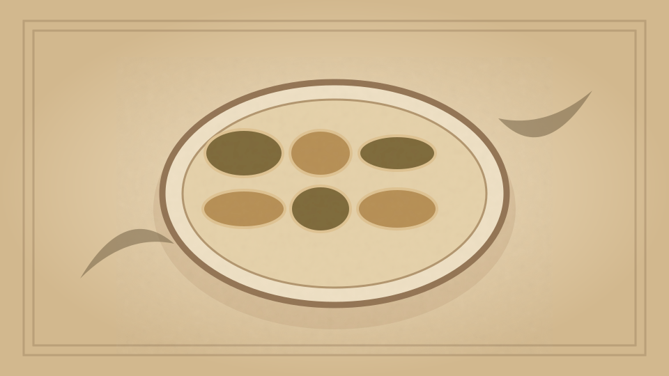

1910 · Fannie Merritt Farmer · FISH
Broiled Pompano with Fricassee of Clams
The Boston Cooking-School Cook Book

Historical Recipe
The following text is extracted from the 1910 edition, retaining historical terminology and quantities.
Original Ingredients & Directions
Clean and broil fish as directed in Ways of Cooking Fish (see p. 160 ). When nearly cooked, slip from broiler onto a hot platter and brush over with melted butter. Surround with two borders of mashed potatoes, one-inch apart, forced through a pastry bag and tube. Arrange ten halves of clam-shells between potato borders, at equal distances; fill spaces between shells with potato roses. Place in oven to finish cooking fish and to brown potatoes. Just before serving, fill clam-shells with
Fricassee of Clams. Clean one pint clams, finely chop hard portions and reserve soft portions. Melt two tablespoons butter, add chopped clams, two tablespoons flour, and pour on gradually one-third cup cream. Strain sauce, add soft part of clams, cook one minute, season with salt and cayenne, and add yolk of one egg slightly beaten.
Automatically extracted transcription; editorial verification pending. Historical instructions may not meet modern food-safety standards.